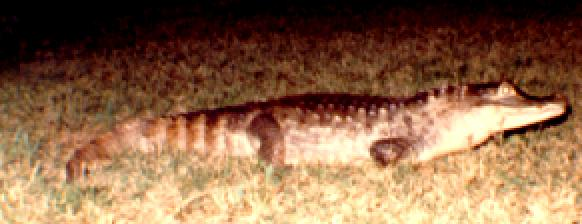
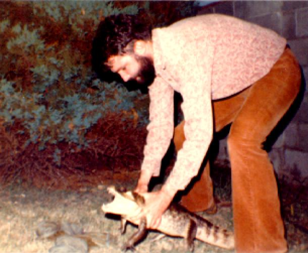
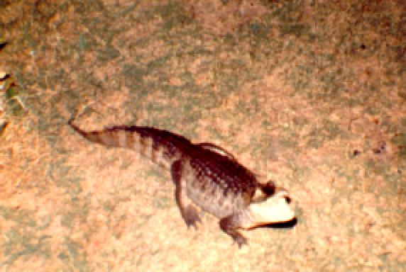
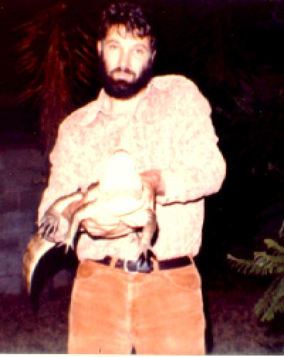
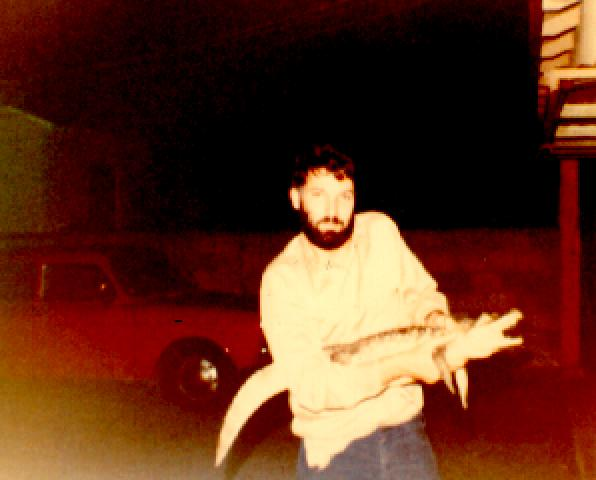
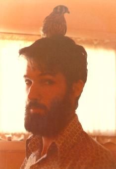
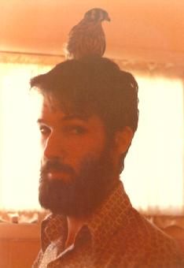

The formidable lass above and in the following four pictures was the late
and much lamented Miss Rosa Maria Garcia who resided with me from
from 1977 to 1982. Her heritage was Latin American, being a
spectacled caiman
(
Caiman crocodilus crocodilus), and she was a very important
part of the social life of North Hollywood CA during her
time there. Her many friends still miss her. I do take some comfort
in knowing she took a piece of me with her.




The following two pictures are of a
red tailed hawk (Buteo
jamaicensis) and a
sparrow
hawk or
American Kestrel
(Falco
sparvarius).
Both were birds that had minor head injuries from flying into power
lines. After having kept for several months both recovered enough to
be released.
 
Back to my home page

Back to my home page